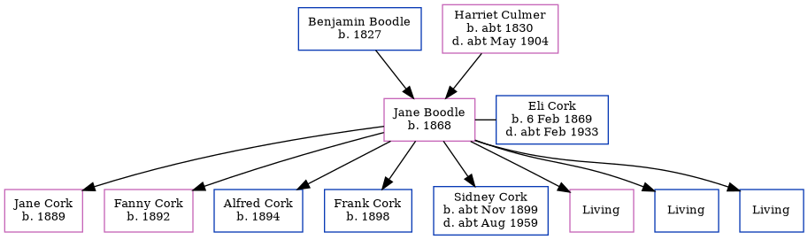

Jane Cork (née Boodle) 1868 -
[ Home ] | [ Calendar ] | [ Surnames Index ] | [ Errors ] | [ Family History ]The child of Benjamin Boodle (an agricultural labourer) and Harriet Culmer, Jane Boodle, the first cousin three-times-removed on the mother's side of Nigel Horne, was born in Canterbury, Kent, England in 18681,2,3 and married Eli Cork (a labourer on a farm with whom she had 8 children: Jane, Fanny, Alfred, Frank, Sidney, Lily, Horace and Leonard, along with 3 surviving children) in Bridge, Kent, England in 1890.
During her life, she was living on Fordwich Lane in Canterbury on 2 Apr 18711; in Blean, Kent, England on 3 Apr 18812; and at Plough Row, Harbledown, Kent on 5 Apr 18915, on 31 Mar 19013 (when she was living with her) and on 2 Apr 19114 (the same place as her mother had been living on 31 Mar 1901).
Parents
- Benjamin was born in 1827
- Harriet was born c. 1830
Children
- Jane was born in 1889
- Fanny was born in 1892
- Alfred was born in 1894
- Frank was born in 1898
- Sidney was born c. Nov 1899
Citations
- 1871 England, Wales & Scotland Census - Findmypast (was age 3 and the daughter of the head of the household)
- 1881 England, Wales & Scotland Census - Findmypast (was age 14 and the daughter of the head of the household)
- 1901 England, Wales & Scotland Census - Findmypast (was age 33 and the wife of the head of the household)
- 1911 Census for England & Wales - Findmypast (was age 43 and the wife of the head of the household)
- 1891 England, Wales & Scotland Census - Findmypast (was age 23 and the wife of the head of the household)
Media
1881 England, Wales & Scotland Census - GBC/1881/0004741626
1901 England, Wales & Scotland Census Transcription - GBC-1901-0005462971
1901 England, Wales & Scotland Census Transcription - GBC-1901-0005462965
Family Tree
Map
Generated by ged2site. Last updated on Jul 3, 2024
Known Issues
Marriage date (1890) has no citations
May have been living with mother on 3 Apr 1881, but the addresses don't match or aren't detailed enough to be sure
May have been living with father on 3 Apr 1881, but the addresses don't match or aren't detailed enough to be sure